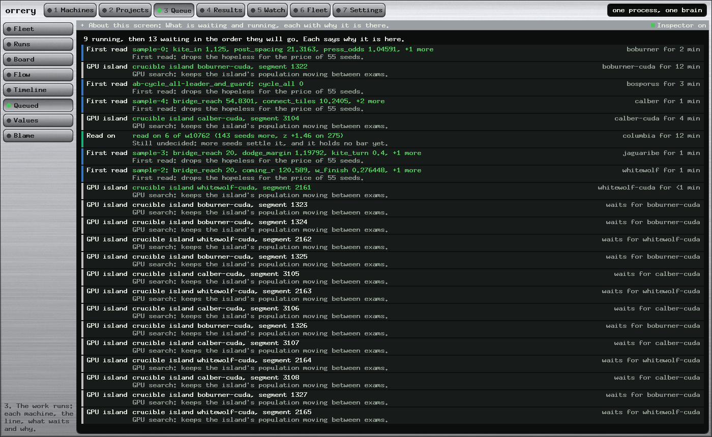
QueuedWhat runs and waits, each saying why it is there.

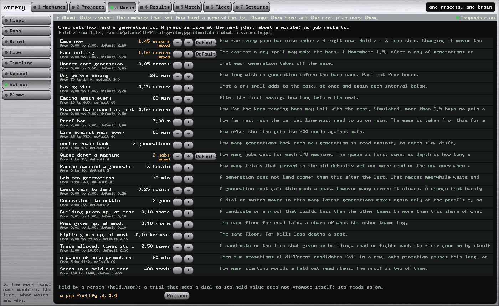
ValuesThe numbers that set how hard a generation is.

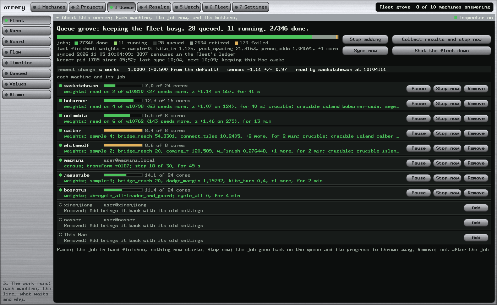
FleetEach machine and its job, with the buttons.

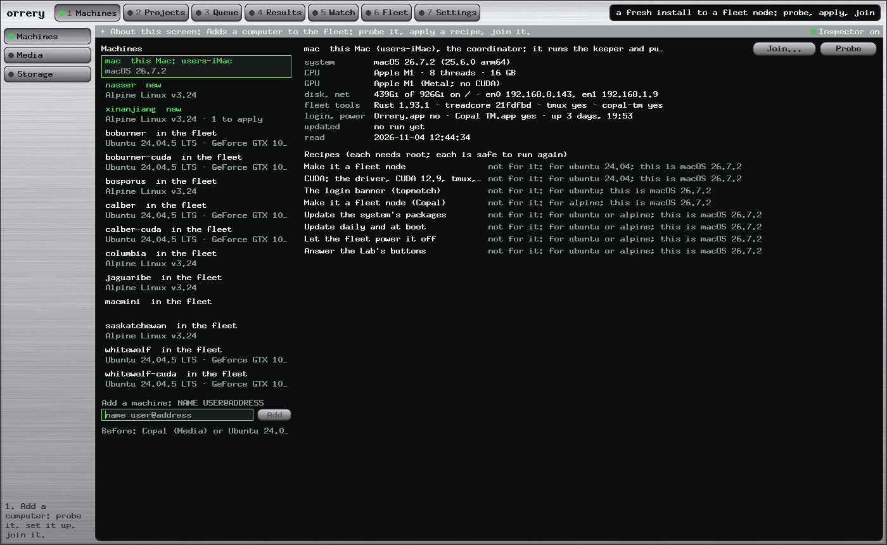
MachinesProbe, recipes, join: a fresh node from the console.

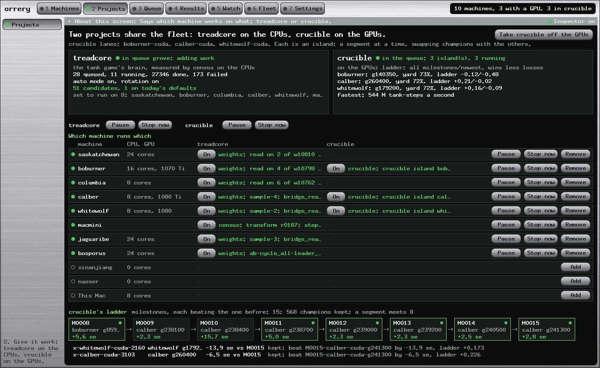
Projectstreadcore and crucible, and which machine runs which.

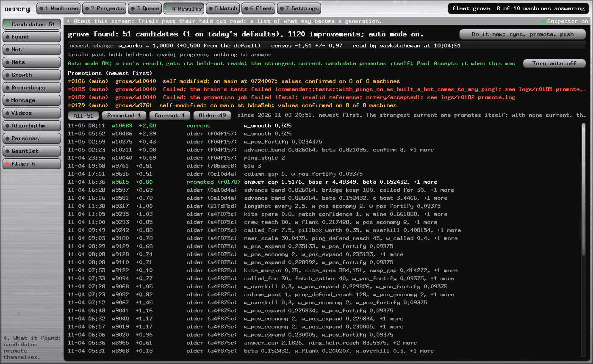
CandidatesTrials past both held-out reads.

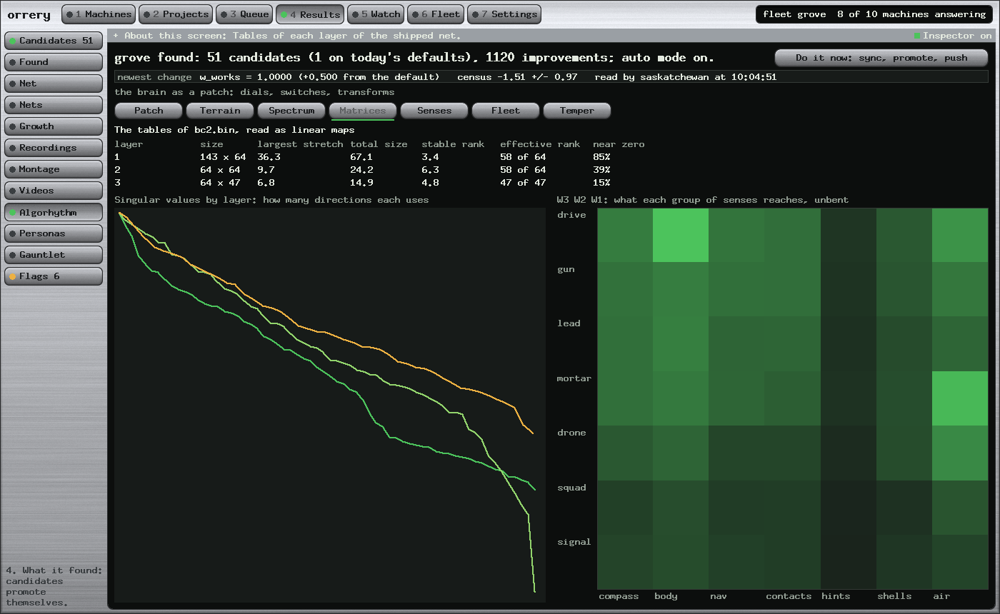
MatricesA champion's layers, a cell a weight.

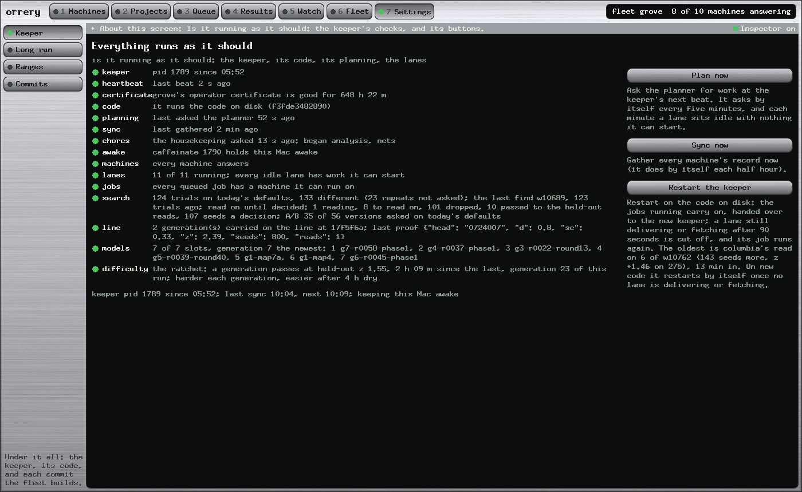
KeeperIs it running as it should: every check, a line each.

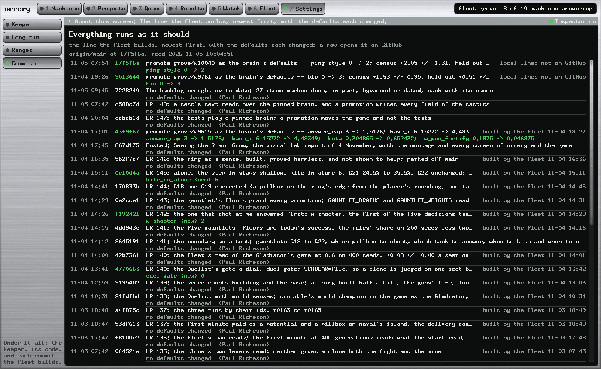
CommitsThe line the fleet builds, and the defaults each moved.

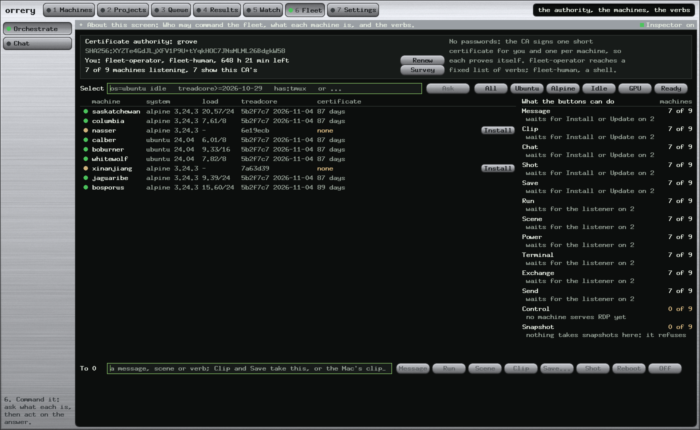
CommandersThe fleet as agents, with a chat.

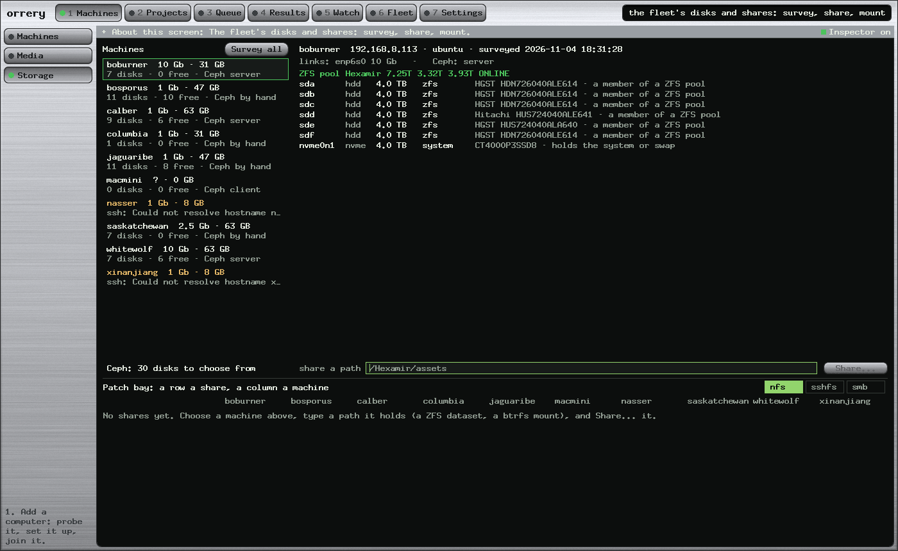
StorageThe disks, the shares, and what lives where.

The montageThe generations as a film, and every other screen.
| Measure | Value | Note |
|---|---|---|
| CPU lanes busy, last 12 h | 97.7% | eight machines, 96.2 to 98.5% each |
| GPU lanes busy, last 12 h | 99.8% | three cards, crucible's islands |
| Jobs a day | 3,955 | 1,519 first reads, 1,505 read-ons, 378 GPU segments, 120 held-out reads |
| Generations, last 7 days | 27 | a median 2.2 hours apart |
| The search's funnel, a day | 1,520 → 3 | 652 read on, 75 held out, 3 generations |
| Jobs run again since the handover | 0 | the keeper keeps its jobs across its own restart |
| A handoff in a chain | 3.2 min | the planner's five-minute pass: the next thing to shorten |
5 November 2026 · the fleet
The Duty CycleNinety-eight percent busy: where the fleet's waiting goes, a round table to see it, four changes with their estimates, and a background job that asks for nothing.4 November 2026 · the fleet
Fifty-Four Idle MinutesThe line replayed twice, three guards, and restarting Orrery without losing work: the keeper's handover, idle lanes flagged, the housekeeping in the keeper.4 November 2026 · the montage
Seeing the Brain GrowThe film of the generations, the champion thinking, a Mind explorer to play in the page, and every screen pictured.1 November 2026 · the line
The Whole LineEach training method, what each stage takes and gives, what stops a candidate.30 October 2026 · the fleet
Commanding the FleetThe fleet as commanders and agents, and the console that orders them.Collected
Every lab reportorrery's, treadcore's brain report a section a step, and every check-in, newest first.orrery
READMEThe console: the wall, the seat, the museum interface, and the verbs that act on a room full of machines.github.com/vonglurt/orrery
orrery · docs/
The documents' READMEThe design set, the guides and the lab reports, and how each is built.docs/README.md
orrery · the design set
Orrery DocumentsThe museum interface, the verbs, the credential rule, the twelve phases and what can go wrong.docs/index.html
treadcore
The game's READMEThe tank game the fleet trains: build it, play it, and where its brain lives.github.com/treadcore/treadcore
treadcore · the brain
LAB-REPORT-BRAIN.mdA numbered section a step, 148 of them: every rule, dial and test of the bots.documentation/LAB-REPORT-BRAIN.md
treadcore.org
The game's siteDownload, how to play, the paper, and the lab reports posted there.treadcore.org